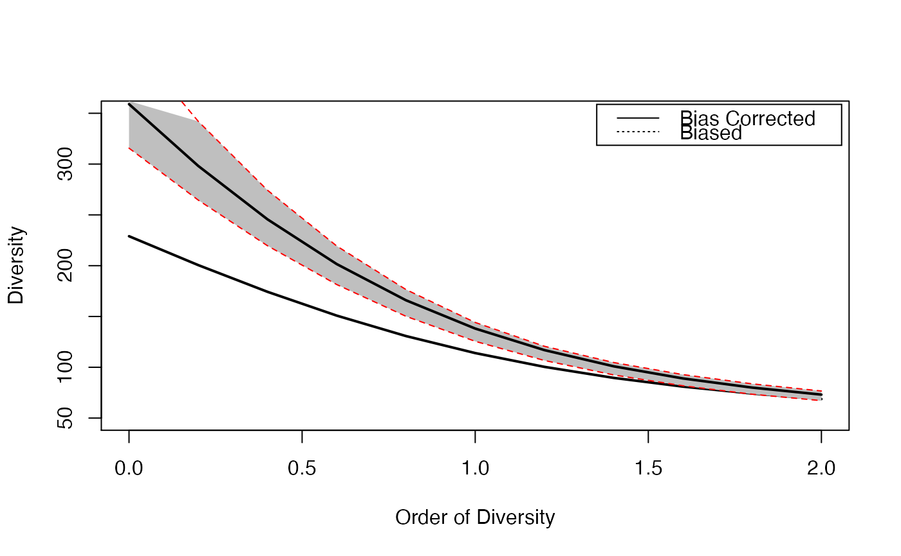

Diversity or Entropy Profile of a community
CommunityProfile.RdCalculates the diversity or entropy profile of a community, applying a community function to a vector of orders.
Usage
CommunityProfile(FUN, NorP, q.seq = seq(0, 2, 0.1),
NumberOfSimulations = 0, Alpha = 0.05, BootstrapMethod = "Chao2015",
size = 1, ..., ShowProgressBar = TRUE, CheckArguments = TRUE)
as.CommunityProfile(x, y, low = NULL, high = NULL, mid = NULL)
is.CommunityProfile(x)
# S3 method for class 'CommunityProfile'
plot(x, ..., main = NULL,
xlab = "Order of Diversity", ylab = "Diversity", ylim = NULL,
LineWidth = 2, ShadeColor = "grey75", BorderColor = "red")
# S3 method for class 'CommunityProfile'
autoplot(object, ..., main = NULL,
xlab = "Order of Diversity", ylab = "Diversity",
ShadeColor = "grey75", alpha = 0.3, BorderColor = "red",
col = "black",
lty = 1,
lwd = 0.5)
CEnvelope(Profile, LineWidth = 2, ShadeColor = "grey75", BorderColor = "red", ...)Arguments
- FUN
The function to be applied to each value of \(q.seq\). Any function accepting a numeric vector (or a two-column matrix) and a number as first two arguments and an argument named
CheckArgumentsis acceptable (other arguments of the functions are passed by...). See *Details* for useful entropy and diversity functions and *Examples* for an ad-hoc one.- NorP
A numeric vector. Contains either abundances or probabilities.
- q.seq
A numeric vector: the sequence of diversity orders to address. Default is from 0 to 2.
- NumberOfSimulations
The number of simulations to run, 0 by default.
- Alpha
The risk level, 5% by default.
- BootstrapMethod
The method used to obtain the probabilities to generate bootstrapped communities from observed abundances. See
rCommunity.- size
The size of simulated communities used to compute the bootstrap confidence envelope. 1 (default) means that the actual size must be used.
- object
An object.
- x
An object to be tested or plotted or the vector of orders of community profiles in
as.CommunityProfile.- y
Entropy or diversity values of each order, corresponding to
xvalues.- low
Entropy or diversity lower bound of the confidence envelope, corresponding to
xvalues.- high
Entropy or diversity higher bound of the confidence envelope, corresponding to
xvalues.- mid
Entropy or diversity center value (usually the mean) of the confidence envelope, corresponding to
xvalues.- Profile
An
CommunityProfileto be plotted.- ...
Additional arguments to be passed to
FUNinCommunityProfile, toplotinplot.CommunityProfileor tolinesinCEnvelope.- main
The main title of the plot.
- xlab
The x axis label of the plots.
- ylab
The y axis label of the plot.
- ylim
The interval of y values plotted.
- LineWidth
The width of the line that represents the actual profile.
- ShadeColor
The color of the shaded confidence envelope.
- BorderColor
The color of the bounds of the confidence envelope.
- alpha
Opacity of the confidence enveloppe, between 0 and 1.
- col
The color of the geom objects. See "Color Specification" in
par.- lty
The type of the lines. See
lines.- lwd
The width of the lines. See
lines.- ShowProgressBar
If
TRUE(default), a progress bar is shown.- CheckArguments
Logical; if
TRUE, the function arguments are verified. Should be set toFALSEto save time when the arguments have been checked elsewhere.
Details
The function CommunityProfile is used to calculate diversity or entropy profiles based on community functions such as Tsallis or ChaoPD.
The first two arguments of the function must be a probability or abundance vector and a number (\(q\)).
Additional arguments cannot be checked.
Unexpected results may be returned if FUN is not used properly.
If NumberOfSimulations is greater than 0, a bootstrap confidence interval is produced by simulating communities with rCommunity and calculating their profiles.
The size of those communities may be that of the actual community or specified by size.
Simulating communities implies a downward bias in the estimation: rare species of the actual community may have abundance zero in simulated communities.
Simulated diversity values are recentered if `size = 1` so that their mean is that of the actual community.
Else, it is assumed that the bias is of interest and must not be corrected.
CommunityProfile objects can be plotted.
They can also be added to the current plot by CEnvelope.
Value
A CommunityProfile, which is a list:
- x
The order \(q\) values
- y
The entropy or diversity values returned by
FUN- low
The lower bound of the confidence interval
- high
The upper bound of the confidence interval
Examples
# Load Paracou data (number of trees per species in two 1-ha plot of a tropical forest)
data(Paracou618)
# Plot diversity estimated without bias correction
plot(CommunityProfile(Diversity, Paracou618.MC$Ps, seq(0, 2, 0.2)),
lty=3, ylim=c(50, 350))
# Estimate diversity, with a condidence envelope
# (only 10 simulations to save time, should be 1000)
Profile <- CommunityProfile(Diversity, as.AbdVector(Paracou618.MC$Ns),
seq(0, 2, 0.2), Correction="UnveilJ", NumberOfSimulations=10)
#>
# Complete the plot, and add the legend
CEnvelope(Profile, main="Paracou Plots Diversity")
legend("topright", c("Bias Corrected", "Biased"), lty=c(1,3), inset=0.01)

# Advanced use with beta-diversity functions :
# Profile of the beta entropy of the first community of Paracou618.
# Observed and expected probabilities are bound into a 2-column matrix
# An intermediate function is necessary to separate them before calling TsallisBeta
# The CheckArguments is mandatory but does not need to be set: CommunityProfile() sets it to FALSE
CommunityProfile(function(PandPexp, q, CheckArguments)
{TsallisBeta(PandPexp[, 1], PandPexp[, 2], q)},
NorP=cbind(Paracou618.MC$Psi[, 1], Paracou618.MC$Ps), q.seq=seq(0, 2, 0.2))
#> $x
#> [1] 0.0 0.2 0.4 0.6 0.8 1.0 1.2 1.4 1.6 1.8 2.0
#>
#> $y
#> [1] 53.42961065 16.60496236 5.55701448 2.02871915 0.80974134 0.34993577
#> [7] 0.16100624 0.07750741 0.03849038 0.01952232 0.01004705
#>
#> attr(,"class")
#> [1] "CommunityProfile"